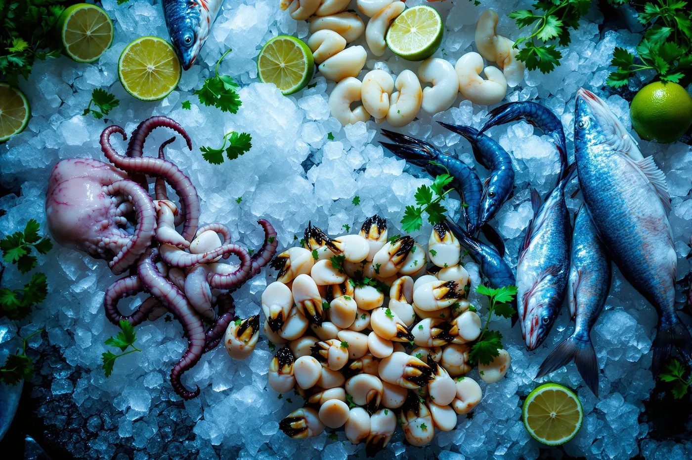

La carta completa
126 platillos organizados en once secciones. Todo lo frío se cura al momento; todo lo que va al fuego sale de la parrilla de carbón. Lo que se cotiza por kilo depende de la pesca del día.
Entremeses
Para abrir la mesa. Mariscos fríos, molcajetes para compartir y los caldos que despiertan el apetito.
Cóctel SAVE especial
Callo de hacha, callo lobina, camarones ahogados, camarón natural, pulpo, caracol y callo de almeja.
Molcajete Guasaveño
Para 2 personas. Callo de hacha, callo lobina, camarones ahogados, camarón natural, pulpo, caracol y callo de almeja.
Mariscada SAVE
Para 3 personas. Callo de hacha, camarón natural, pulpo, caracol y aguachile verde y rojo.
Camarón grande para pelar
Camarones cucaracha
Con cáscara o pelados.
Camarón frito en salsas negras
Camarón natural
Pulpo natural
Cóctel
Ostión, pulpo o camarón.
Almeja natural o en ceviche
Ostiones en su concha
Órdenes de 6 o 12 piezas.
Chiles torito
Chiles güeros rellenos de machaca de camarón o marlín en salsas negras.
Leche de tigre
Consomé con camarón picado, cebolla y pepino.
Leche de tigre Santa Julia
Consomé con camarón, pulpo, caracol, cebolla, pepino y cilantro.
Callo de hacha Jayalai
En salsas negras con tomate y pepino.
Callo de hacha SAVE especial
Clamato, cebolla, pepino y chile de árbol.
Tostadas y ceviches
El corazón crudo de la costa sinaloense: limón, chile y producto que llegó fresco esa mañana.
Aguachile verde, rojo, negro o tatemado
Camarón curtido al momento. El tatemado lleva chiles asados al comal.
Aguachile de mango
Tostada de pescado
Trozos de pescado curtidos en limón.
Tostada de camarón
Camarón curtido en limón.
Tostada de camarón cocido
Campechano
Pescado curtido en limón, camarón y pulpo cocido.
SAVE peruano
Callo de hacha, camarón y pescado en salsa cremosa de jalapeño.
SAVE especial de camarón o pulpo
Clamato, cebolla, pepino y chile de árbol.
Tropical
Camarón cocido, mango, fresa y un toque agridulce.
Primavera
Camarón curtido en limón, cebolla, cilantro, pepino y un toque de habanero.
Camarón tempura
Montados sobre tostadita crocante en cama de aguacate oriental.
Tostada de marlín
Lomo de atún
Machaca de atún importado.
Jaiba natural
Casaleña especial
Pulpa de jaiba, camarón, pulpo, callo de almeja, callo de hacha y caracol.
Crocante de atún
Con vinagreta de aceite de ajonjolí, aguacate y cebolla curtida.
Atún cítricos
Atún fresco importado en salsa de cítricos, coronado con poro frito y mayonesa.
Variedades del taco
De la tortilla de harina del norte al vampiro y la costra de queso. Los que se piden de dos en dos.
Chilitaco
En tortilla de harina relleno de camarón o marlín con queso y envuelto en tocino.
Taco Mochomito Don Manuel
Machaca de camarón o pescado mochomito sobre costra de queso, aguacate y aderezo chipotle.
Gober
Machaca de camarón con queso a la plancha.
Gober 300
Machaca de camarón con queso adobado a las brasas, con salsa chipotle.
Pescado al pastor
Pescado capeado
Vampiro de pescado al pastor
Lorenza de pescado al pastor
Taco de atún
Machaca de atún con queso a las brasas.
Taco de salmón
Frito en cama de guacamole con un toque de salsa Gus.
Taco de marlín
Machaca de marlín con queso a las brasas o plancha.
Pulpo Campeche
Pulpo premium
Pulpo a las brasas con queso dorado y champiñones al ajillo.
Mexicano
Camarón, pulpo o pescado en tortilla de harina con aderezos y salsa mexicana.
Camarón capeado
Vallarta
En tortilla de harina relleno de jaiba y queso, bañado en salsa chipotle.
Camarón estilo SAVE
Quince maneras de entender el mismo camarón azul del Mar de Cortés. Aquí viven los clásicos de la casa.
Camarones SAVE
Capeados en aderezo oriental con un toque de picante.
Camarones Philadelphia
Rellenos de queso philadelphia, empanizados con coco y ajonjolí, con salsa de mango.
Camarones Doña Pelancha
Con tocino, cebolla, champiñones y espinacas a la crema.
Camarones Puerto Rico
Empanizados con coco en salsa de mango.
Camarones Manta
Rellenos de queso philadelphia y jamón, empanizados con pistache.
Camarones Danny
A la crema con chile poblano, horneados al gratín.
Camarones enchipotlados
Horneados al gratín con salsa de chile guajillo, chipotle y champiñón.
Camarones almendrados
Costra de almendras, relleno de philadelphia, con dúo de salsas oriental y almendras.
Camarones aguacate
Montados en base de guacamole, bañados en salsa de vino blanco y ajo.
Camarones Guanajuato
Rellenos de queso y envueltos en tocino.
Camarones rellenos
Rellenos de marlín y queso, envueltos en tocino.
Camarones mantequilla o mojo de ajo
Camarones a la diabla
Camarones empanizados
Camarones al ajillo
Zarandeados y a las brasas
El fuego de la palapa. Piezas enteras, lonjas y langostinos que se cotizan por kilo según la pesca del día.
Lonja a las brasas
340 g.
Lonja Pelancha Michelle
A las brasas, bañada en salsa cremosa con tocino, espinaca y champiñón.
Volcán marino
Lonja a las brasas con banderillas de camarón en salsa de ajo.
Filete a las brasas
240 g.
Camarones con cabeza a las brasas
260 g la orden.
Pulpo a las brasas
240 g.
Ostiones a las brasas
8 piezas.
Langostinos especial a las brasas
700 g.
Huachinango, pargo o róbalo
A las brasas o frito. Por kilo.
Totoaba
Zarandeada o frita. Por kilo.
Salmón a las brasas o plancha
280 g en salsa de mango, tamarindo o mantequilla.
Salmón Martell especial
280 g con banderillas de camarón y pulpo, bañado en salsa de manzana.
Cola de langosta Termidor o Puerto Nuevo
Por kilo.
Filetes y especialidades
Rellenos, gratinados y bañados. La cocina caliente de SAVE en su versión más ambiciosa.
Filete Rey
260 g horneado, relleno de tocino, champiñón y camarón al gratín con un toque de picante.
Filete Tamazula
260 g relleno de camarón, pulpo, queso philadelphia y salsa bechamel al gratín.
Filete Doña Olivia
260 g relleno de camarón, philadelphia, champiñón y espinacas en salsa bechamel al gratín.
Filete Caribeño
260 g horneado al gratín, relleno de camarón, pulpo y marlín.
Filete Tres Ilusiones
300 g relleno de camarón, espinaca, champiñones, nuez y philadelphia, bañado en salsa de tres quesos.
Filete relleno a la diabla
300 g relleno de queso cheddar con pimiento y espinaca, bañado en salsa diabla.
Filete Doña Aída
280 g a la plancha con tocino y camarón al gratín.
Filete relleno
260 g relleno de camarón, pulpo y marlín, capeado y bañado en aderezo Aurora.
Filete agridulce
En costra de almendra, bañado con salsa oriental y montado sobre puré.
Atún de dos gotas de agua
Medallón a las brasas o sellado, gratinado, bañado en salsa de vino blanco y ajo.
Atún cítrico
Medallón a las brasas o sellado, bañado en salsa cremosa de cítricos.
Salmón al portobello
A la plancha sobre guiso de portobello con pimientos, bañado en crema de camarón al cognac.
Filete a la diabla
Filete de pescado
Filete empanizado
Pulpo estilo SAVE
Pulpo suave, guisado o al fuego, con tres personalidades distintas.
Pulpo Rey Loco
Guisado con marlín ahumado, camarón y salsa de soya.
Pulpo a la diabla
Pulpo al mojo o mantequilla
Light
Al vapor, a la plancha y en ensalada: la misma materia prima, sin capeado ni crema.
Taco de lechuga
Camarón, jícama y zanahoria guisados con mojo de ajo.
Filete Soto Light
300 g relleno de camarón y vegetales, bañado en salsa light.
Filete empapelado
350 g de filete al vapor con camarón, pulpo y vegetales.
Ensalada Michelle
Ensalada Michelle especial
Con pollo, pescado, res o camarón.
Cortes finos
Porque no toda la mesa viene por mariscos.
Rib Eye
370 g.
Vacío
320 g.
Arrachera
320 g.
Molcajete mar y tierra
Arrachera y camarón gratinado.
Guarniciones
Papa SAVE famosa
Pan con ajo
5 piezas.
Orden de arroz
Orden de frijoles
Orden de aguacate
Orden de guacamole
Puré de papa
Papas fritas
Ensalada fresca
Ensalada americana
Postres
Pastel de tres leches
Volcán de chocolate o dulce de leche
Pastel de queso con zarzamora
Crème brûlée
Jericalla
Flan napolitano
Pay de guayaba
Pay de plátano
Pastel de chocolate
Arroz con leche
Pastel de elote
Endulzado con Splenda.
Helados
Vainilla, chocolate, fresa, coco o limón.
Sobre precios y disponibilidad. La carta cambia con la temporada de pesca. Las piezas enteras —huachinango, pargo, róbalo, totoaba y langosta— se cotizan por kilo según el producto que llegó ese día. Si tienes alguna alergia o restricción alimentaria, dilo al hacer tu pedido: ajustamos la preparación siempre que sea posible.
Resolvemos dudas
Sobre la carta
Sí. La sección Light incluye taco de lechuga con camarón, jícama y zanahoria al mojo de ajo, filete empapelado al vapor de 350 g, filete Soto Light relleno de camarón y vegetales, y las ensaladas Michelle, que pueden pedirse con pollo, pescado, res o camarón.
El Molcajete Guasaveño está pensado para dos personas y la Mariscada SAVE para tres. También hay órdenes de ostiones de 6 y 12 piezas, y piezas enteras de pescado que se sirven por kilo.
Los Camarones SAVE —capeados en aderezo oriental con un toque de picante— y el aguachile, en sus versiones verde, rojo, negro y tatemado. El Chilitaco y el pulpo a las brasas los siguen de cerca.
Sí. La sección de cortes finos incluye Rib Eye de 370 g, vacío y arrachera de 320 g, además del molcajete mar y tierra con arrachera y camarón gratinado.

¿Ya sabes qué vas a pedir?
Aparta tu mesa y llega directo a sentarte. Reservar toma menos de un minuto.